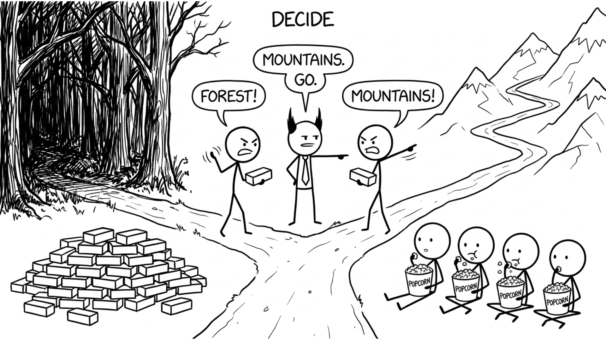

<section id="decide" data-transition="fade" style="display:flex; align-items:center; justify-content:center; padding:0; background:#fcfcfa">

<p style="position:absolute;left:0;bottom:10px;width:1920px;margin:0;text-align:center;font-family:'Patrick Hand', 'Trebuchet MS', sans-serif;font-size:22px;color:#8a8f98">Copyright Dobromir Montauk 2026</p>
<aside><b>Decide.</b> Teams lose days, sometimes weeks, waiting on decisions nobody owns. The cost isn't the two people arguing; it's everyone blocked behind them.<br>- Two senior engineers debate the data model for two weeks while the rest of the team can't start.<br>- A design review ends with "let's take this offline" for the third time.<br>- A PR sits blocked on an architecture argument in the comments.<br>- "Which customer first?" goes unanswered, so people pick their own.<br>Most technical decisions are reversible. Set a deadline for the decision, hear both sides, make the call, write down why, and revisit if new data shows up. Disagree and commit.</aside>
</section>
